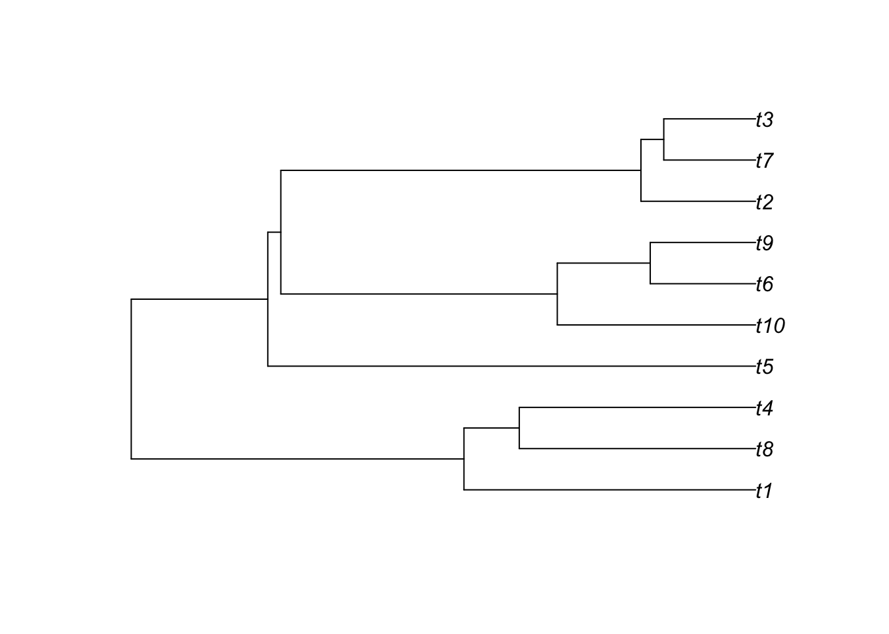
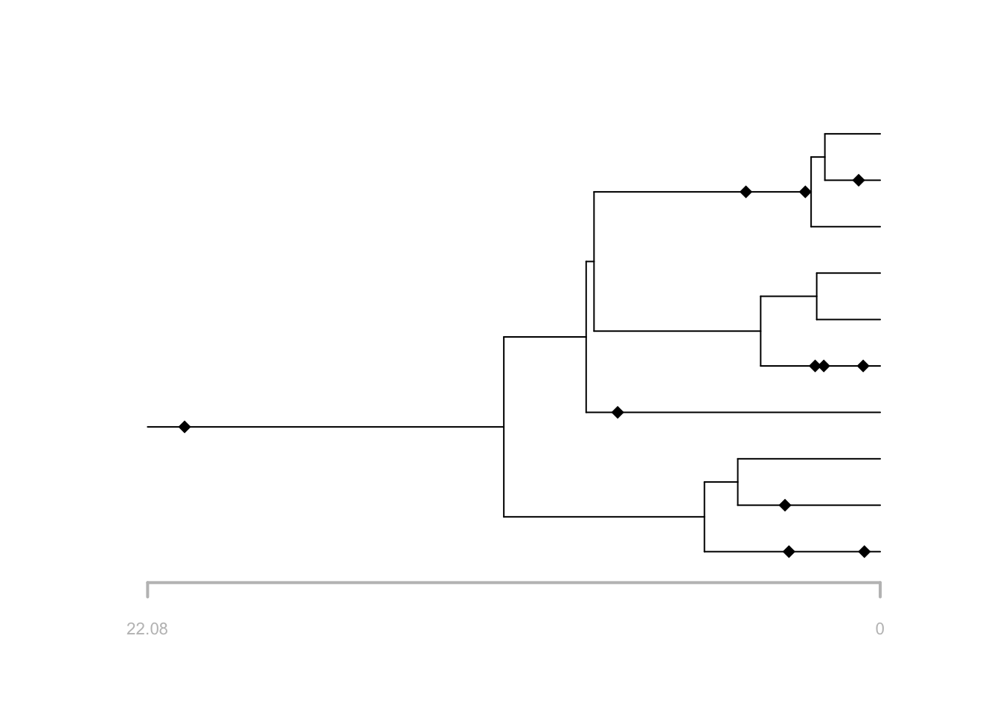
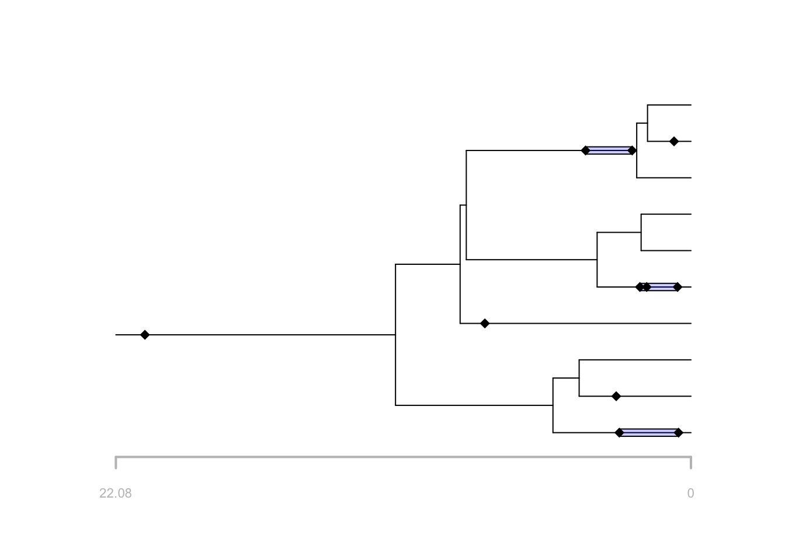
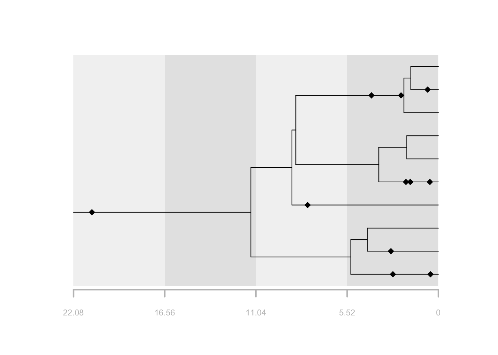
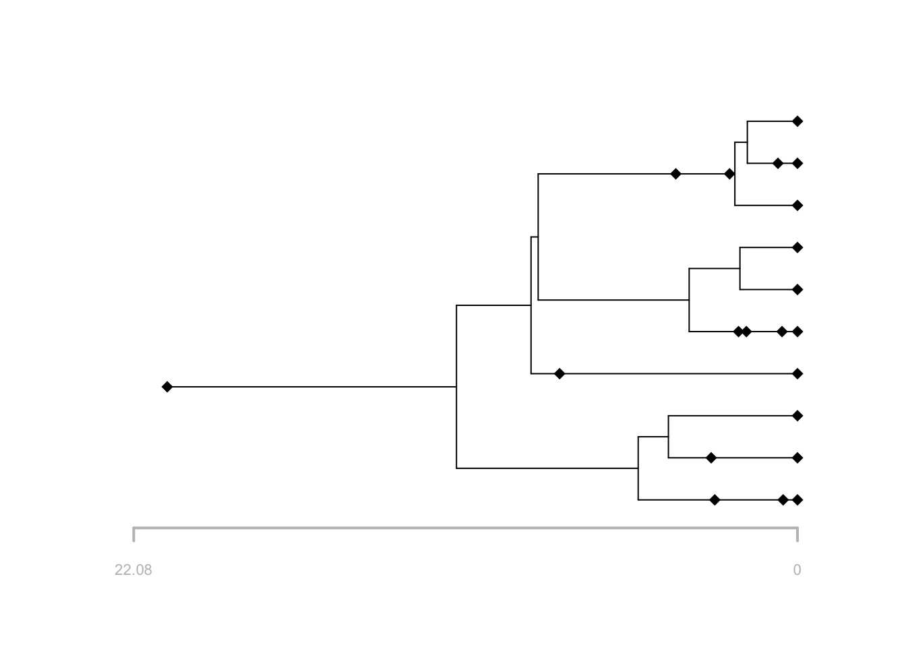
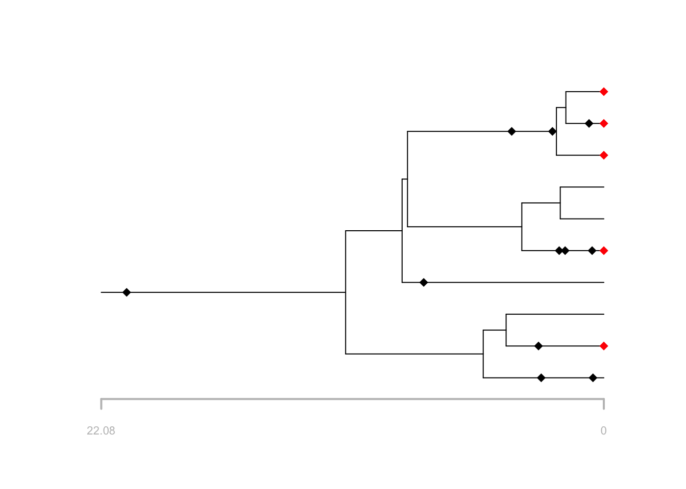

This exercise will walk through key assumptions of the fossilized birth-death (FBD) process using the R package FossilSim.
The FBD process is a joint model of diversification and sampling, first described in Stadler (2010). It can be used to calculate the probability of observing a phylogeny with fossils, as extinct leaves or sampled ancestors.
The model is statistically coherent for the analysis of phylogenetic and fossil data because it features explicit assumptions about the underlying data generating processes. This means we can forward simulate, as well as perform inference, under the model, which is a major advantage for understanding the model properties and assumptions.
Install the necessary R packages.
install.packages("TreeSim")
install.packages("FossilSim")The model has four parameters:
The birth and death rate parameters are part of the diversification component of the model and describe how the tree grows over time, while the fossil recovery and extant species sampling parameters describe how the tree is incompletely sampled over time.
The diversification and sampling processes can be considered separately, which is convenient for both simulation and understanding different the two components (diversification and sampling) of the model.
First we’ll simulate trees, and explore the role of the birth and death parameters.
In the following we will simulate birth-death trees conditioned on
the number of tips \(n\), using the
TreeSim package function sim.taxa.bd. The
function simulates birth and death events forward in time until there
are \(n\) co-existing lineages.
Let’s give it a go.
# set the random number generator seed to generate the same results using the same code
set.seed(1234)
# simulate a tree using TreeSim conditioned on tip number
lambda = 0.1
mu = 0.05
tips = 10
t = TreeSim::sim.bd.taxa(n = tips, numbsim = 1, lambda = lambda, mu = mu)[[1]]
# t is an object of class phylo
t##
## Phylogenetic tree with 10 tips and 9 internal nodes.
##
## Tip labels:
## t5, t6, t1, t9, t3, t8, ...
##
## Rooted; includes branch lengths.# plot the tree
plot(t)
Note the function simulates the complete tree, that is, the tree containing all lineages that were ever part of the tree (observed and unobserved).
Run the function a few more times without changing any of the parameters. You should notice that each tree looks quite different. This reflects the stochasticity inherent in the birth-death process \(-\) the same combination of birth and death parameter will result a wide range of possible outcomes.
Next, increase the birth rate to something like 0.3, and simulate some new trees. Do you notice any general differences about the trees? Next, increase the death rate to something like 0.25 and do the same. What do you notice this time?
Here we’ll simulate fossils, assumming a constant rate of fossilisation.
# Simulate fossils
rate = 0.3 # poisson sampling rate
f = FossilSim::sim.fossils.poisson(rate = rate, tree = t)
f## sp edge hmin hmax
## 1 1 1 7.9126891 7.9126891
## 2 3 3 0.4766375 0.4766375
## 3 3 3 2.7507976 2.7507976
## 4 6 6 2.8698887 2.8698887
## 5 7 7 1.7002141 1.7002141
## 6 7 7 0.5138199 0.5138199
## 7 7 7 1.9609156 1.9609156
## 8 9 9 0.6496230 0.6496230
## 9 11 11 20.9641465 20.9641465
## 10 17 17 4.0468324 4.0468324
## ...
## Fossil record with 11 occurrences representing 7 species
## Fossil record not simulated using taxonomy: all speciation events are assumed to be symmetricEach entry in the fossils data frame corresponds to a fossil sampling
time. sp and edge are the species and edge
labels, respectively. hmin and hmax are the
youngest and oldest sampling ages associated with each fossil,
respectively. Since this function returns exact fossil sampling times
hmin and hmax are equal.
FossilSim has a lot of different functions for plotting
the output.
# plot fossil occurrences
plot(f, tree = t)
# plot stratigraphic ranges
plot(f, tree = t, show.ranges = TRUE)
# plot the output
plot(f, tree = t, show.strata = TRUE, strata = 4)
What happens if you decrease or increase the fossil sampling rate?
You can also compare the complete and reconstructed trees.
# plot the reconstructed tree
plot(f, tree = t, reconstructed = TRUE)
Next we can add include incomplete extant species sampling.
# extant sampling
rho = 0.5
# simulate extant species sampling
f2 = FossilSim::sim.extant.samples(fossils = f, tree = t, rho = rho)
# plot the output
plot(f2, tree = t, extant.col = "red")
What happens if you increase or decrease rho?